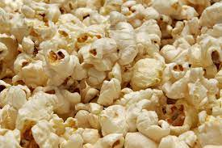

popcorn

Description
this web page will teach you how to make a popcorn!
Ingredients
- oil
- corn seeds
- cooking pot
- bowl
- salt (optional)
Steps
- put the oil and the pot and turn on the stove
- wait for the pot to be hot
- pour the corn seeds into the pot
- wait for the seeds the finish popping
- once they will stop popping put them in the bowl and add the salt!